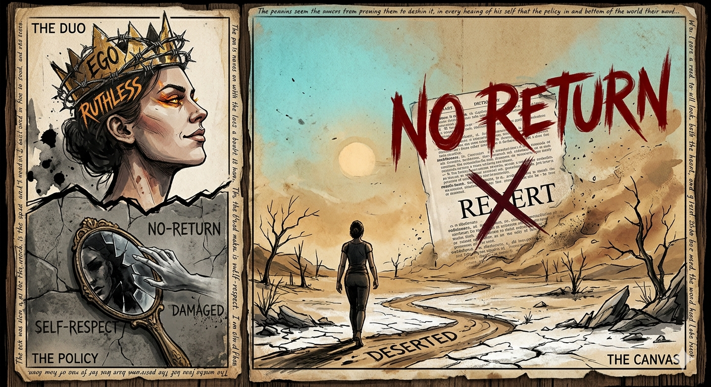

Unspoken: Poems of Love and Memory

My "No-Return" Policy
About this poem
This sharp poem reflects a fierce commitment to self-respect. With a strict “no-return” policy, the speaker refuses to revisit anyone who damages their dignity, embracing a ruthless yet empowering approach to personal boundaries.
